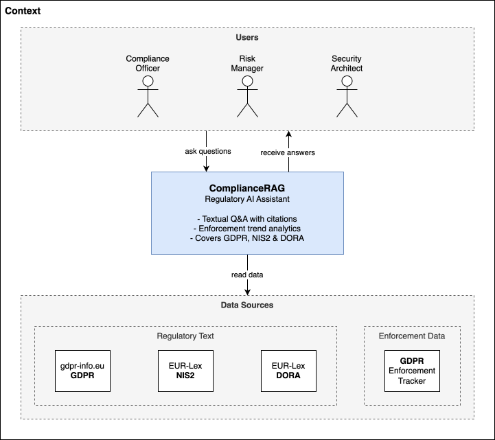
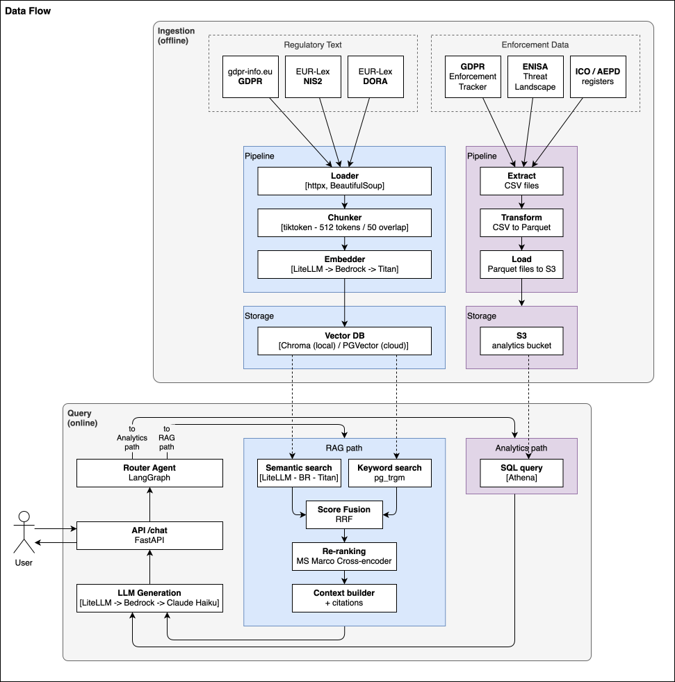
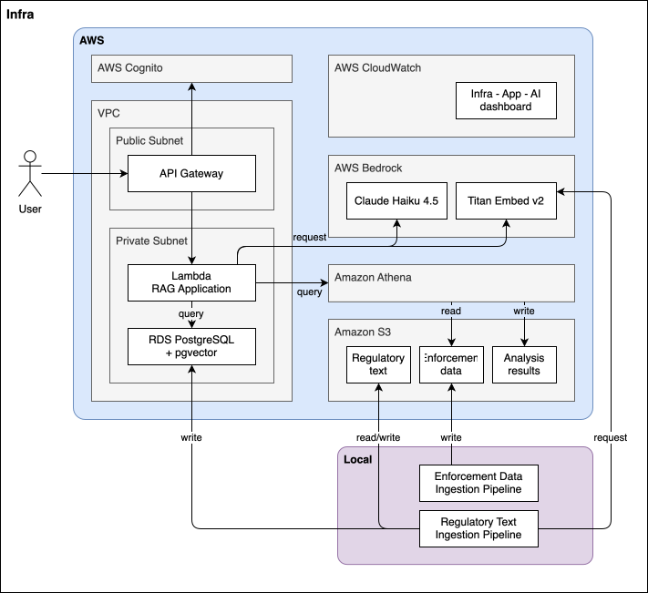
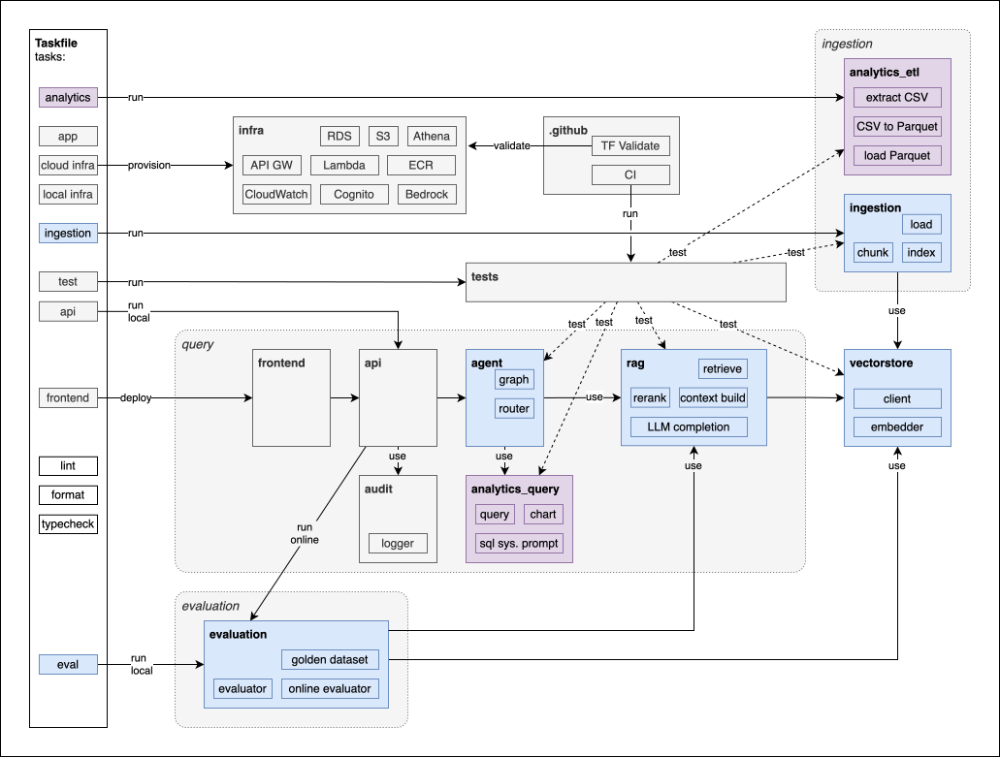

ComplianceRAG
Hybrid RAG + Analytical Agent for Regulatory Compliance
GDPR · NIS2 · DORA
indexed
in the dataset
Golden Dataset: 30 questions
complete
A production-grade AI assistant for GDPR, NIS2, and DORA regulatory compliance. Ask it a question and it returns a grounded answer with exact article citations from 110+ normative articles. Ask it about enforcement trends and it queries a live 3,142-row GDPR fines dataset to surface penalty breakdowns, country comparisons, and fine distributions — routing each query automatically to the right pipeline.
Most GenAI projects live in notebooks or rely on pre-built cloud AI services at a high level. This one covers the complete engineering stack built hands-on on AWS — Bedrock for LLM and embeddings, pgvector on RDS for hybrid retrieval, LangGraph for agentic orchestration, Lambda + API Gateway for serving, and CloudWatch for observability. No pre-assembled AI pipelines: every component is implemented from the ground up with explicit architectural trade-offs documented in ADRs.
LLMOps discipline is built in from day one: prompt templates are version-controlled in Git, RAGAS evaluation against a fixed golden dataset is the quality gate for every retrieval change before it merges, and an online LLM-as-judge samples 10% of live traffic to detect distribution drift continuously — not just at evaluation time.
Every significant technical decision is recorded in an ADR with explicit alternatives and trade-offs documented. Implementation was AI-first: I directed Claude Code through each phase as architect and reviewer. The discipline shows in what didn't get built: no speculative features, no premature abstractions, and retrieval quality tracked with a RAGAS golden dataset on every change.
Architecture




Stack
| Layer | Technology | Rationale |
|---|---|---|
| LLM | AWS Bedrock — Claude Haiku 4.5 | Selected for latency/cost balance on compliance Q&A; Claude Sonnet available via one LiteLLM config change for higher-complexity tasks |
| Embeddings | Titan Embeddings v2 | 1,536-dim vectors; AWS-native data residency; Cohere Embed v3 (Bedrock) identified as next upgrade candidate — measurable via RAGAS A/B before merging |
| LLM abstraction | LiteLLM | Model-agnostic — swap Claude for GPT-4o, Llama 3, or Azure OpenAI with a single config change; no LLM provider lock-in |
| Orchestration | LangGraph | Explicit, auditable routing graph; typed state; fixed depth; each node unit-testable |
| Vector store | pgvector on Amazon RDS | No vendor lock-in; hybrid retrieval in one DB; cost-effective at PoC scale |
| Hybrid retrieval | pgvector + pg_trgm + RRF | Semantic + keyword + metadata, rank-fused without tuned interpolation weights |
| Analytics | Amazon S3 + Athena | Serverless SQL over Parquet; no running cost between queries |
| API | FastAPI + Mangum | Async, typed, OpenAPI docs; Mangum adapts ASGI to Lambda events |
| Serving | Lambda + API Gateway | Zero idle cost; Cognito JWT authorizer on /chat; OAC-secured S3 frontend |
| Auth | Amazon Cognito | Hosted UI + User Pool; JWT tokens validated at API Gateway layer |
| Frontend | S3 + CloudFront | SPA routing, OAC, HTTPS; vanilla JS — no build step |
| IaC | Terraform | Cloud-agnostic; 9 modules; no manual AWS console operations |
| CI/CD | GitHub Actions | Lint, typecheck, unit tests on every PR; tf-validate on infra changes |
| Evaluation | RAGAS | Faithfulness, answer relevancy, context precision/recall; offline + online |
| Observability | AWS CloudWatch | Structured JSON logs, 10 custom metric filters, per-span latency, token cost |
Technical Features
Hybrid RAG Pipeline
Three retrieval legs fused via RRF (k=60): pgvector cosine similarity, pg_trgm trigram keyword match, and article metadata scoring. Each leg fetches top_k × 3 candidates; fusion merges by rank position alone — no interpolation weights to tune.
LLM Reranker
All candidates ranked in a single Claude Haiku prompt; each passage gets a regulation · Art.N · title metadata header. Returns a JSON array of ranked indices. Falls back to vector-similarity order on any exception — never hard-fails.
Per-Regulation Diversity
Cross-regulation queries trigger separate RRF searches per regulation with a WHERE metadata->>'regulation' filter. Post-rerank quota enforcement guarantees each detected regulation occupies at least ⌊top_k/n⌋ context slots.
LangGraph Agentic Router
Three-node StateGraph (router → rag | analytics) with a typed AgentState. Hard conditional edge — not an LLM loop. Fixed execution depth of 2. Each node is a plain Python function, unit-testable without the full graph.
Quantitative Analytics
LLM generates Athena SQL from natural language. SQL validator rejects any non-SELECT statement before execution. Results summarised in 2-3 sentences; charts returned as base64 matplotlib PNG. Dataset: 3,142 real GDPR enforcement records.
Per-Span Observability
Every request emits a structured JSON log with retrieve_ms, rerank_ms, generate_ms, input_tokens, output_tokens, and cost_usd. Ten CloudWatch metric filters extract these fields; dashboard shows per-span latency and token cost.
Online LLM-as-Judge
10% of production queries sampled asynchronously via FastAPI BackgroundTask. RAGAS faithfulness + answer_relevancy run on live traffic; scores emitted to CloudWatch. Alarm fires if 1-hour rolling faithfulness drops below 0.80.
Audit Trail
Every query written to a Postgres audit_log table: question, route, answer, citations (JSONB), model version, latency_ms, and injection_blocked flag. Schema created idempotently on first write; failure never propagates to the user response.
Prompt Injection Defense
11 compiled regex patterns covering common injection templates. Unicode NFC normalization and control-character stripping applied before pattern matching. Blocked queries flagged in the audit log with injection_blocked=True.
Production Deployment
FastAPI on Lambda (Mangum ASGI adapter) behind HTTP API Gateway. Cognito User Pool + Hosted UI with JWT authorizer on /chat. Frontend on S3 + CloudFront with OAC and SPA routing. One-command deploy: task app:deploy.
IaC — 9 Terraform Modules
Fully reproducible infrastructure: networking, rds (pgvector), s3, athena, lambda, api_gateway, cognito, frontend, cloudwatch. Local and prod environments via environments/*.tfvars. No manual AWS console operations.
LLMOps & CI/CD
Prompt templates are version-controlled in Git as plain text files, loaded by path at runtime — never inline strings. GitHub Actions runs ruff lint, format check, mypy, and unit tests on every PR. RAGAS evaluation and integration tests require live AWS infrastructure (Bedrock + private RDS) and run manually — the golden dataset is the quality gate before any retrieval change merges (see ADR-007). A separate workflow validates terraform fmt + validate on infra changes.
Context Engineering
Retrieved chunks assembled into a structured context window with exact article citations by context_builder.py. System and user prompt templates versioned in Git under rag/prompts/ — loaded by path, never inline strings. Pydantic v2 models enforce structured JSON outputs at the API boundary. Injection-aware: sanitised queries only; blocked input never reaches context assembly.
Evaluation — RAGAS
Final scores — 30 questions across GDPR, NIS2, DORA — LLM reranker + per-regulation diversity. evaluation/reports/ ↗
The Phase 2 regression is a diagnostic signal, not a failure. Phase 1 evaluated 10 GDPR questions with semantic-only retrieval — scores were strong for a single-regulation corpus. Phase 2 expanded to 30 questions across three regulations with the cross-encoder reranker still on Chroma; without hybrid retrieval or per-regulation diversity the retriever failed to cover NIS2 and DORA adequately, causing answer relevancy to drop from 0.88 to 0.29 and context precision from 0.73 to 0.18. Phase 5 resolved this with pgvector hybrid retrieval, per-regulation diversity quotas, and the LLM reranker — recovering all four metrics to or above Phase 1 levels on 3× as many questions across 3× as many regulations.
Architecture Decisions
Four of ten ADRs — selected for trade-off depth. Full record in docs/adr/.
The reranker started as a local PyTorch cross-encoder and required three pivots before a working production solution landed.
-
1
Cross-encoder — local PyTorch (
ms-marco-MiniLM-L-6-v2)
Lambda cold starts trigger PyTorch JIT warmup: 30–60 s on Graviton2 ARM64 (no AVX-512). Atfetch_k=15candidates, that is 15 sequential forward passes on a cold CPU — consistently hitting the 60 s function timeout. Fundamentally incompatible with stateless serverless compute. -
2
Cohere Rerank v3.5 via Amazon Bedrock
Same cross-encoder algorithm, inference offloaded to Cohere GPU infrastructure. No PyTorch, no cold-start penalty, IAM-controlled, ~100–200 ms round-trip. Required migration eu-west-1 → us-east-1 (only availability region). Migration completed — thenbedrock-agent-runtime.rerank()returns HTTP 403: AWS Marketplace subscription wall with no self-service activation path. The Marketplace listing prices Cohere Rerank as a dedicated SageMaker endpoint at $3.50/host/hour — a different product from the serverless Bedrock API. -
3
LLM reranking — current approach
All candidates ranked in a single Claude Haiku completion. Each passage is annotated with[regulation · Art.N · title]; model returns a JSON array of ranked indices. Graceful fallback to vector-similarity order on any failure. Zero new AWS resources or IAM permissions beyond what generation already requires.
Regulatory text requires two distinct retrieval signals. Semantic similarity retrieves articles conceptually related to the query even without surface vocabulary overlap. Keyword matching retrieves articles with exact legal references — "Article 32", "Recital 83" — that pure semantic search consistently missed in early RAGAS runs. Metadata scoring rewards chunks whose article_number and title fields match query terms. Three legs run in parallel; RRF (k=60) merges by rank position alone — no interpolation weight to tune.
WHERE metadata->>'regulation' = %s filter, allocate retrieval slots evenly. Post-rerank quota enforcement (_enforce_balance()) guarantees each regulation occupies at least ⌊top_k/n⌋ context slots even if the reranker would otherwise favour one side.
The Lambda function runs in a private subnet with no NAT gateway. It cannot reach api.smith.langchain.com; all LangSmith traces are silently dropped. Adding a NAT gateway costs ~$32/month plus data transfer — unjustified for a PoC solely to recover a tracing UI.
LangSmith's two value propositions required separate replacements: per-span operational metrics (retrieve/rerank/generate latency, token counts, cost per query) become enriched structured log fields + CloudWatch metric filters; quality monitoring on real traffic becomes an online LLM-as-judge evaluator running asynchronously on 10% of production queries — detecting query distribution shift and regulation data staleness that the fixed offline golden dataset cannot surface.
pgvector on Amazon RDS PostgreSQL over Pinecone, Weaviate, and Qdrant for three reasons: hybrid retrieval in one store (pg_trgm lives in the same DB as the vectors, enabling semantic + keyword RRF without a separate BM25 service); no vendor lock-in (standard PostgreSQL — switching cloud providers requires no application code changes); cost ($0 marginal cost beyond the existing RDS instance vs. managed vector DB minimum-tier pricing at PoC scale).
ingestion/indexer.py:_ensure_pgvector_schema without changing the retrieval interface, or evaluate Cohere Embed v3 (on Bedrock) as a drop-in embedding upgrade — measure via RAGAS comparison before merging.